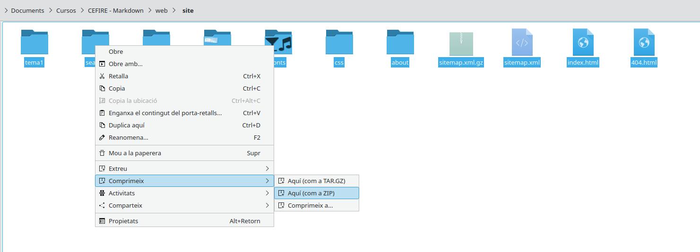

Allotgem la nostra web al servidor d'Aules
En l'apartat anterior hem vist com construir la nostra web. Ara podem allotjar els nostres arxius per a que es mostres en forma de web a Aules.
Per allotjar la nostra web a Aules, hauriem de seguir els següents passos:
- Comprimim tot el contingut de la cvarpeta site en un arxiu .zip. 
- Creem un recurs de tipus Fitxer a aules i afegim el zip.

- Descomprimim el zip una vegada pujat.

- Fem clic sobre l'arxiu index.html (o l'arxiu arrel del teu lloc si has canviat el nom a l'arxiu md principal) i el definim com a fitxer principal.

-
Per últim definim com volem que es veja:
- Automàtic - Se selecciona de forma automàtica la millor opció per visualitzar el tipus de fitxer. En este cas l'incrustarà.
- Incrustat - El fitxer es mostra dins d'Aules.
- Imposa que es baixe - Se li demana descarregar el fitxer a l'usuari. No utilitzar.
- Obri - Es mostra la web a la finestra actual del navegador.
- Finestra emergent - El fitxer es mostra en una finestra nova del navegador sense menús ni barres d'adreces.